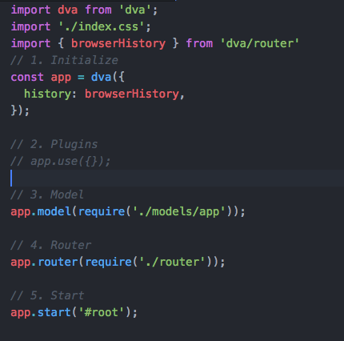

dva 我认为可以理解为对redux的一种封装
redux 的工作流程图， 更容易去理解dva中的model

安装dva-cli
dva 有自己的脚手架，在开发项目的时候，我们需要先安装一个脚手架
1
2
|
$ npm install -g dva-cli
|
安装完成后，可以通过 dva -v 查看版本
创建新应用
1
2
3
4
5
|
1. dva new myApp
2. cd myApp
3. npm install
4. npm start
|
（DVA）定义组件一般有三种方式：
1
2
3
4
5
6
7
8
9
|
// 1. 传统写法
const App = React.createClass({});
// 2. es6 的写法
class App extends React.Component({});
// 3. stateless 的写法（函数的写法，但是不会调用react 的生命周期）
const App = (props) => ({});
|
其中第1种是不推荐的写法，第2种是在你的组件涉及 react 的生命周期方法的时候采用这种写法(可以使用this)，而第3种则是我们一般推荐的写法。
初始化dva

1
2
3
4
5
6
7
8
9
10
11
12
13
14
15
16
17
18
19
20
21
22
23
24
25
26
27
| app = dva(opts)
创建应用，返回 dva 实例
opts 包含：
history：指定给路由用的 history，默认是 hashHistory
initialState：指定初始数据，优先级高于 model 中的 state，默认是 {}
如果要配置 history 为 browserHistory，可以这样：
import createHistory from 'history/createBrowserHistory';
const app = dva({
history: createHistory(),
});
const app = dva({
history,
initialState,
onError,
onAction,
onStateChange,
onReducer,
onEffect,
onHmr,
extraReducers,
extraEnhancers,
});
|
定义 Model
model 是 dva 中最重要的概念
1
2
3
4
5
6
7
8
9
10
11
12
13
14
15
16
17
18
19
20
21
22
23
24
25
26
27
28
29
30
31
32
33
34
35
36
37
38
39
40
41
42
43
44
45
46
47
48
49
|
app.model({
namespace: 'todo', // model 的命名空间，同时也是他在全局 state 上的属性，只能用字符串，不支持通过 . 的方式创建多层命名空间
state: [], // 初始值，优先级低于传给 dva() 的 opts.initialState。
// const app = dva({
// initialState: { count: 1 },
// });
// app.model({
// namespace: 'count',
// state: 0,
// });
// state.count 为 1
reducers: { // 以 key/value 格式定义 reducer。用于处理同步操作，唯一可以修改 state 的地方。由 action 触发
add(state, { payload: todo }) {
// 保存数据到 state
return [...state, todo];
},
},
effects: {
*save({ payload: todo }, { put, call }) {
// 调用 saveTodoToServer，成功后触发 `add` action 保存到 state
yield call(saveTodoToServer, todo);
yield put({ type: 'add', payload: todo });
},
},
// 以 key/value 格式定义 effect。用于处理异步操作和业务逻辑，不直接修改 state。由 action 触发，可以触发 action，可以和服务器交互，可以获取全局 state 的数据等等。
// 格式为 *(action, effects) => void 或 [*(action, effects) => void, { type }]
subscriptions: {
setup({ history, dispatch }) {
// 监听 history 变化，当进入 `/` 时触发 `load` action
return history.listen(({ pathname }) => {
if (pathname === '/') {
dispatch({ type: 'load' });
}
});
},
},
// 以 key/value 格式定义 subscription。subscription 是订阅，用于订阅一个数据源，然后根据需要 dispatch 相应的 action。在 app.start() 时被执行，数据源可以是当前的时间、服务器的 websocket 连接、keyboard 输入、geolocation 变化、history 路由变化等等。
// 格式为 ({ dispatch, history }, done) => unlistenFunction。
});
|
当我们使用put发送一条action的时候 与之对于的reducers就会接收到这个消息 然后在里面返回state等数据
在reducers中尽量只做state的数据返回 不要在这里写相关的逻辑
上面出现了 put call 这两个单词
其实 不止这几个
一般常用的有put call select take
1
2
3
|
用于触发action
yield put({ type: 'add', payload: todo });
|
- call 以异步的方式调用函数，用于异步逻辑，支持promise
1
2
3
4
5
6
7
|
yield call(saveTodoToServer, todo);
saveTodoToServer这里可以是一个请求
export function saveTodoToServer(payload) {
return axios.get(`xxx`);
}
|
1
2
|
const todo = yield selecct(stete => state.count)
|
effects 接收数据
dispatch 是根据你effects里面设置的type内容 然后转发到指定的model的 所以你这边 要设置正确以后 在model那边才能接收到你发送的这条action
dispatch 在使用connect包裹的组件中可以通过 const { dispatch } = this.props; 拿到
当我们在页面中进行操作时，可以通过dispatch 分发这条action到model中
具体的代码，比如
1
2
3
4
5
| save = (todo) =>{
if (todo !== '') {
dispath({type:'count/save', plyload: todo})
}
}
|
这个count就是在model中设置的namespace,save就是effects中你自己起的type
plyload是传过去的数据
1
2
3
4
5
6
7
8
|
effects: {
*save({ payload: todo }, { put, call }) {
// 调用 saveTodoToServer，成功后触发 `add` action 保存到 state
yield call(saveTodoToServer, todo);
yield put({ type: 'add', payload: todo });
},
},
|
reducers 处理数据
1
2
3
4
5
6
| reducers: {
add(state, { payload: todo }) {
// 保存数据到 state
return [...state, todo];
},
},
|
subscriptions 监听数据
react组件生命周期
组件的生命周期可分成三个状态：
- Mounting：已插入真实 DOM
- Updating：正在被重新渲染
- Unmounting：已移出真实 DOM
生命周期的方法有：
- componentWillMount 在渲染前调用,在客户端也在服务端。
- componentDidMount : 在第一次渲染后调用，只在客户端。之后组件已经生成了对应的DOM结构，可以通过this.getDOMNode()来进行访问。 如果你想和其他JavaScript框架一起使用，可以在这个方法中调用setTimeout, setInterval或者发送AJAX请求等操作(防止异部操作阻塞UI)。
- componentWillReceiveProps 在组件接收到一个新的prop时被调用。这个方法在初始化render时不会被调用。
- shouldComponentUpdate 返回一个布尔值。在组件接收到新的props或者state时被调用。在初始化时或者使用forceUpdate时不被调用。可以在你确认不需要更新组件时使用。
- componentWillUpdate在组件接收到新的props或者state但还没有render时被调用。在初始化时不会被调用。
- componentDidUpdate 在组件完成更新后立即调用。在初始化时不会被调用。
- componentWillUnmount在组件从 DOM 中移除的时候立刻被调用。